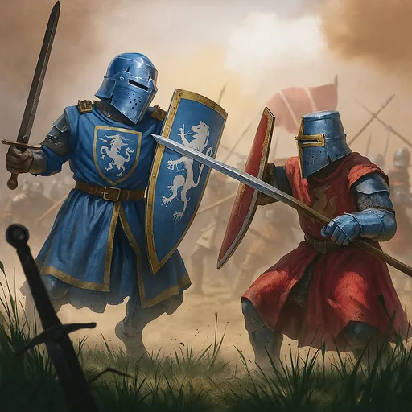
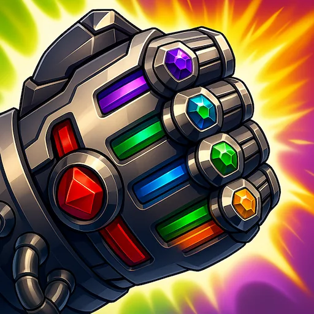
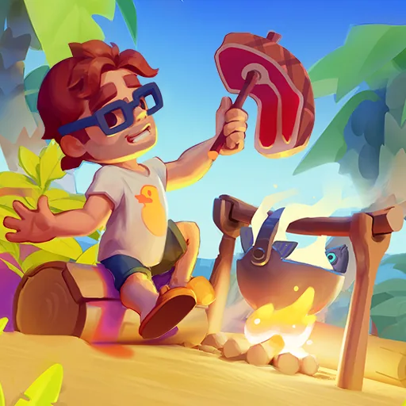
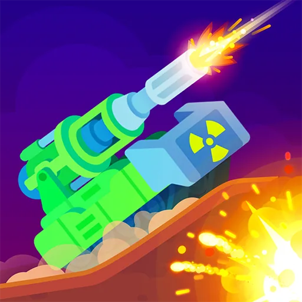

This portfolio is password protected. Enter the password to continue.
From the first idea to the final build — hooks, tutorials, and the pacing that keeps people playing.

Tap to playExamples of playable ads I created and led from concept to release. Tap a card to play and explore the full spec.



How a playable actually gets made, from the first idea to the build that ships.
For the last year, I've been the only playable ads producer on my team. I work with 15 casual and midcore mobile games at the same time and release more than 30 playables every month. I've already produced more than 400 in total.
Usually I handle the whole production process: research the game and competitors, find the hook and the mechanic, write the GDD, brief artists and developers, review builds, test everything and take the playable to the final version.
Before gaming, I spent more than six years in advertising. As a Group Head Creator I led a team of seven. That is why I treat a playable as an ad first — it has to stop the scroll and sell the game honestly, not just be a fun mini-game.
A few of my concepts became internal benchmarks for the client. A year later they are still the reference other playables iterate from.
I'm mostly interested in roles where playable ads are the main focus. Open to remote work and relocation.